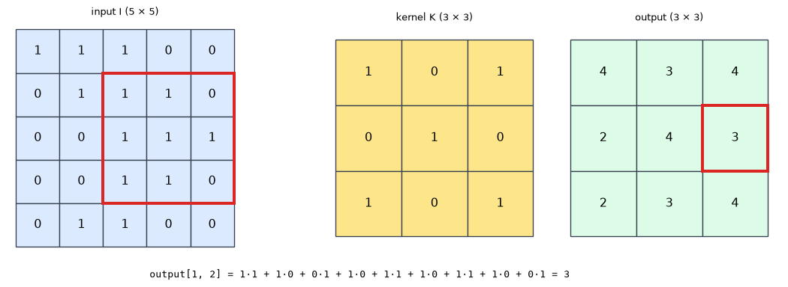
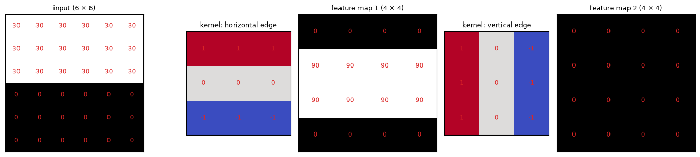
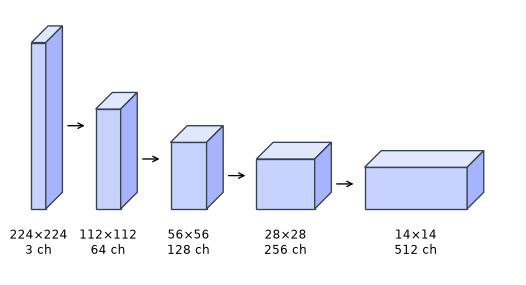
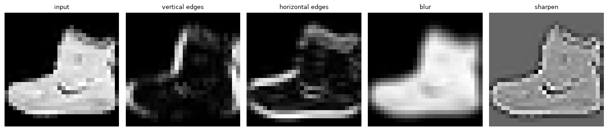
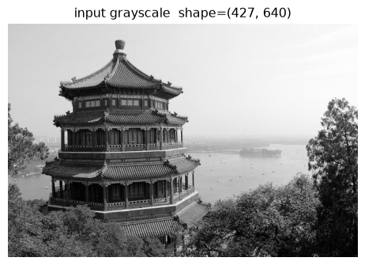
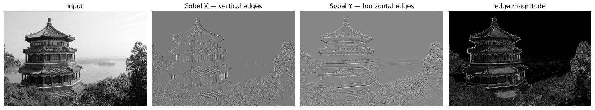
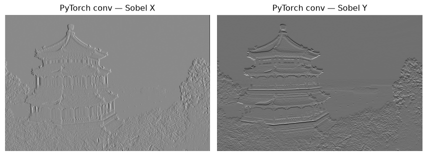

The Convolution Operation
Derived, not decreed: ask a layer to treat every position the same way and to look only nearby, and the only layer left is a convolution. Then the operation itself, worked by hand: the sliding window, kernels as feature detectors, many kernels and channels, weight sharing and feature maps.
01 From MLP to convolution — two principles
The question
What's the right architecture for images?
Instead of guessing, impose two design requirements and derive what layer satisfies them.
The two principles
- Translation invariance — "A cat is a cat whether it's at the top-left or bottom-right of the image." (Strictly the layer is translation-equivariant: shift the input and the output shifts with it. Invariance, an unchanged output, comes later from pooling and the classifier.)
- Locality — "To detect an edge or a corner, you only need to look at nearby pixels."
Any linear layer satisfying both is a convolution. That's what we'll show.
02 Principle 1 — translation invariance
The constraint
Formally: if x' is the input x shifted by (dh, dw), then the layer's output on x' should be the layer's output on x also shifted by (dh, dw).
What it forces
In an MLP, the weight connecting input x_{ij} to output y_{kl} is some W_{ij,kl} — different for every pair.
Translation invariance says: this weight can only depend on the relative offset (k-i, l-j), not on the absolute positions. So:
That's the convolution kernel. The output is:
Translation invariance alone makes the layer a convolution.
03 Principle 2 — locality
The constraint
K_{dh, dw} = 0 whenever |dh| or |dw| exceeds some small radius. Equivalently: only nearby pixels contribute to a given output.
Why it's reasonable
Local features — edges, corners, small textures — are built from pixels close to each other. You don't need to look at the opposite corner of the image to detect that there's a line passing through this point.
The combined result
Translation invariance + locality forces the layer to be a convolution with a small kernel (typically 3×3 or 5×5). Everything else about CNNs — pooling, batch norm, deeper networks — builds on this.
04 The convolution operation
The definition
For input I (shape H \times W) and kernel K (shape k \times k):
That is: at each position (y, x) in the output, place the kernel's top-left corner there, multiply element-wise with the pixels underneath, and sum.
The algorithm in words
For every output position:
- Align the kernel over the input patch.
- Multiply each kernel value with the pixel beneath it.
- Sum all the products.
- Write the result to the output.
- Slide the kernel to the next position.
A quick naming note
What ML calls "convolution" is technically cross-correlation — true convolution flips the kernel first. For symmetric kernels (blur, Laplacian) it makes no difference. For asymmetric ones (Sobel) it does, but the "flip or not" distinction is cosmetic in practice: the network learns whichever version through its weights. We just call both convolution.
05 Convolution as feature detection
The kernel is a template
A convolution kernel is just a small template. When the kernel's shape matches a pattern in the image, the multiply-and-sum gives a large positive output. When they don't match, the output is near zero.
So the output is a feature map: "here are the places in the image where this pattern is present."
Classical examples (hand-designed)
The Sobel X kernel detects vertical edges:
A pixel to the left is subtracted; a pixel to the right is added. A region where "left is dark, right is bright" produces a strong positive output — a vertical edge.
CNN kernels are learned
Before CNNs, people hand-designed kernels (Sobel, Prewitt, Gabor, SIFT). CNNs learn them from data by backpropagation — early layers tend to converge to edge-and-blob detectors, later layers to parts and objects. Same operation, different source of the kernel values.
06 The sliding window — worked example
Example — a 5×5 image, 3×3 kernel

Python code for this figure
import numpy as np
import matplotlib.pyplot as plt
from matplotlib.patches import Rectangle
I = np.array([[1, 1, 1, 0, 0], [0, 1, 1, 1, 0], [0, 0, 1, 1, 1], [0, 0, 1, 1, 0], [0, 1, 1, 0, 0]])
K = np.array([[1, 0, 1], [0, 1, 0], [1, 0, 1]])
O = np.array([[(I[r:r + 3, c:c + 3] * K).sum() for c in range(3)] for r in range(3)])
r0, c0 = 1, 2 # the highlighted position
fig, axes = plt.subplots(1, 3, figsize=(12, 4), gridspec_kw={"width_ratios": [5, 3, 3]})
def grid(ax, M, title, hl=None, col="#dbeafe"):
n, m = M.shape
for (i, j), v in np.ndenumerate(M):
ax.add_patch(Rectangle((j, n - 1 - i), 1, 1, fc=col, ec="#374151"))
ax.text(j + 0.5, n - 0.5 - i, str(v), ha="center", va="center", fontsize=12)
if hl:
(i, j, h, w) = hl
ax.add_patch(Rectangle((j, n - i - h), w, h, fill=False, ec="#dc2626", lw=3))
ax.set_xlim(-0.2, m + 0.2); ax.set_ylim(-0.2, n + 0.2); ax.set_aspect("equal"); ax.axis("off"); ax.set_title(title, fontsize=10)
grid(axes[0], I, "input I (5 × 5)", hl=(r0, c0, 3, 3))
grid(axes[1], K, "kernel K (3 × 3)", col="#fde68a")
grid(axes[2], O, "output (3 × 3)", hl=(r0, c0, 1, 1), col="#dcfce7")
patch = I[r0:r0 + 3, c0:c0 + 3]
terms = " + ".join(f"{a}·{b}" for a, b in zip(patch.flatten(), K.flatten()))
fig.text(0.5, 0.02, f"output[{r0}, {c0}] = {terms} = {O[r0, c0]}", ha="center", fontsize=10, family="monospace")
plt.tight_layout(rect=(0, 0.06, 1, 1)); plt.show()Change I, K or the highlighted position r0, c0 and run it again to follow any other output value.
Input I (5×5) with a 3×3 kernel K gives output (5 - 3 + 1) \times (5 - 3 + 1) = 3 \times 3.
- Position (0, 0): kernel over top-left patch → one output value.
- Position (0, 1): slide one pixel right → next output value.
- …
- Position (2, 2): kernel over bottom-right patch → final output value.
9 output positions in total. Each computes an independent dot product between the kernel and the patch of the image underneath.
The output size formula (no padding, stride 1):
Full derivation of the general formula (with stride and padding) is in note 15.
07 Multiple kernels and channels
Multiple kernels — one per feature

Python code for this figure
import numpy as np
import torch
import torch.nn.functional as Fn
import matplotlib.pyplot as plt
I = np.array([[30] * 6] * 3 + [[0] * 6] * 3, dtype=np.float32)
kernels = {"horizontal edge": [[1, 1, 1], [0, 0, 0], [-1, -1, -1]], "vertical edge": [[1, 0, -1], [1, 0, -1], [1, 0, -1]]}
W = torch.tensor(list(kernels.values()), dtype=torch.float32).unsqueeze(1) # (2 out channels, 1 in channel, 3, 3)
out = Fn.conv2d(torch.tensor(I).view(1, 1, 6, 6), W)[0] # (2, 4, 4)
fig, axes = plt.subplots(1, 5, figsize=(15, 3.3), gridspec_kw={"width_ratios": [6, 3, 4, 3, 4]})
def show(ax, M, title, cmap="gray", vmin=None, vmax=None):
ax.imshow(M, cmap=cmap, vmin=vmin, vmax=vmax)
for (i, j), v in np.ndenumerate(np.asarray(M)):
ax.text(j, i, f"{v:g}", ha="center", va="center", fontsize=9, color="#dc2626")
ax.set_title(title, fontsize=10); ax.set_xticks([]); ax.set_yticks([])
show(axes[0], I, "input (6 × 6)")
for k, (name, kern) in enumerate(kernels.items()):
show(axes[1 + 2 * k], np.array(kern), f"kernel: {name}", cmap="coolwarm", vmin=-1, vmax=1)
show(axes[2 + 2 * k], out[k].numpy(), f"feature map {k + 1} (4 × 4)", vmin=0, vmax=90)
plt.tight_layout(); plt.show()
print("weight tensor shape (C_out, C_in, k, k):", tuple(W.shape), " output shape:", tuple(out.shape))A single kernel detects one pattern. A real CNN layer has many kernels (typically 32, 64, 128, 256, 512...), each learning a different pattern. The output of the layer has as many channels as there were kernels.
Multiple input channels — RGB and beyond
For an input with C_{\text{in}} channels, each kernel is 3D with shape (k, k, C_{\text{in}}). It still produces a single feature map — all channels are summed in the dot product.
For C_{\text{out}} output channels, we stack C_{\text{out}} such kernels. So the full weight tensor of a conv layer has shape:

Python code for this figure
import matplotlib.pyplot as plt
from matplotlib.patches import Polygon
stages = [(224, 3), (112, 64), (56, 128), (28, 256), (14, 512)]
fig, ax = plt.subplots(figsize=(12, 3.6))
x = 0
for i, (s, c) in enumerate(stages):
h = 0.6 + 2.4 * s / 224; w = 0.25 + 1.6 * c / 512; d = 0.3
ax.add_patch(Polygon([(x, 0), (x + w, 0), (x + w, h), (x, h)], fc="#c7d2fe", ec="#374151"))
ax.add_patch(Polygon([(x, h), (x + d, h + d), (x + w + d, h + d), (x + w, h)], fc="#e0e7ff", ec="#374151"))
ax.add_patch(Polygon([(x + w, 0), (x + w + d, d), (x + w + d, h + d), (x + w, h)], fc="#a5b4fc", ec="#374151"))
ax.text(x + w / 2, -0.35, f"{s}×{s}\n{c} ch", ha="center", va="top", fontsize=9)
if i < len(stages) - 1:
ax.annotate("", (x + w + 0.75, h / 2), (x + w + 0.35, h / 2), arrowprops=dict(arrowstyle="->"))
x += w + 0.9
ax.set_xlim(-0.3, x); ax.set_ylim(-1.2, 3.6); ax.set_aspect("equal"); ax.axis("off"); plt.show()Standard filter progression
Typical modern CNNs follow a progression like:
| Layer | Spatial size | Channels |
|---|---|---|
| Input | 224 × 224 | 3 |
| Conv1 | 112 × 112 | 64 |
| Conv2 | 56 × 56 | 128 |
| Conv3 | 28 × 28 | 256 |
| Conv4 | 14 × 14 | 512 |
Spatial resolution shrinks (via stride / pooling) while channel depth grows — the network trades "where" for "what".
08 Weight sharing — the parameter payoff
Counting again
For a 224×224×3 RGB image to a layer of 64 kernels of size 3×3:
- Weights: 64 \times (3 \times 3 \times 3) = 1{,}728
- Biases: 64
- Total: 1{,}792 parameters
Compare to the equivalent fully-connected layer:
~5,400× fewer parameters, and that dense layer only outputs 64 numbers. A dense layer producing the conv layer's full output (64 maps of 224 × 224) would need 150{,}528 \times 3{,}211{,}264 \approx 4.8 \times 10^{11} weights. The conv layer gets away with 1,792 because each kernel is "the detector for feature k", reused at every position.
Why sharing is OK
A "vertical edge detector" is useful at every pixel of the image. There's no reason to have a separate vertical-edge detector for the top-left and a different one for the bottom-right. Weight sharing is a hard prior: the useful features are translation-invariant.
09 Feature maps — what the output looks like

Python code for this figure
import numpy as np
import torch
import torch.nn.functional as Fn
import matplotlib.pyplot as plt
from torchvision import datasets
img = torch.tensor(np.array(datasets.FashionMNIST(root="data", train=True, download=False)[0][0]), dtype=torch.float32) / 255
kernels = {"vertical edges": [[-1, 0, 1], [-2, 0, 2], [-1, 0, 1]], "horizontal edges": [[-1, -2, -1], [0, 0, 0], [1, 2, 1]],
"blur": [[1 / 9] * 3] * 3, "sharpen": [[0, -1, 0], [-1, 5, -1], [0, -1, 0]]}
W = torch.tensor(list(kernels.values()), dtype=torch.float32).unsqueeze(1)
maps = Fn.conv2d(img.view(1, 1, 28, 28), W, padding=1)[0]
fig, axes = plt.subplots(1, 5, figsize=(14, 3))
axes[0].imshow(img, cmap="gray"); axes[0].set_title("input", fontsize=10)
for ax, m, name in zip(axes[1:], maps, kernels):
ax.imshow(m.abs() if "edges" in name else m, cmap="gray"); ax.set_title(name, fontsize=10)
for ax in axes: ax.axis("off")
plt.tight_layout(); plt.show()What a feature map shows
Each output channel is a spatial map that lights up where its kernel's pattern matched. Plot it as a grayscale image: bright = "feature strongly present here", dark = "not present".
The learned hierarchy
Trained CNN kernels empirically converge to:
| Layer | Learned features |
|---|---|
| 1 | Oriented edges, colour blobs |
| 2 | Textures, simple patterns |
| 3 | Object parts (eye, wheel, nose) |
| 4+ | Full objects, scene components |
This hierarchy wasn't programmed. It emerges because higher-level features are compositions of lower-level ones, and gradient descent finds the composition.
10 Runnable demo — hand-written edge detector
import numpy as np
import matplotlib.pyplot as plt
from scipy.signal import convolve2d
from sklearn.datasets import load_sample_images
# A real colour image
img = load_sample_images().images[0] # shape (H, W, 3)
gray = img.mean(axis=2) # convert to grayscale by averaging channels
plt.figure(figsize=(6, 4))
plt.imshow(gray, cmap='gray'); plt.title(f'input grayscale shape={gray.shape}'); plt.axis('off')
plt.show()
Define edge kernels — Sobel X and Y
Kx = np.array([[-1, 0, 1],
[-2, 0, 2],
[-1, 0, 1]], dtype=np.float32)
Ky = np.array([[-1, -2, -1],
[ 0, 0, 0],
[ 1, 2, 1]], dtype=np.float32)
print("Sobel X (vertical edges):\n", Kx)
print("\nSobel Y (horizontal edges):\n", Ky)Sobel X (vertical edges): [[-1. 0. 1.] [-2. 0. 2.] [-1. 0. 1.]] Sobel Y (horizontal edges): [[-1. -2. -1.] [ 0. 0. 0.] [ 1. 2. 1.]]
Apply the convolutions
# scipy's convolve2d flips the kernel for true convolution — pass mode='same' to keep size
gx = convolve2d(gray, Kx, mode='same', boundary='symm')
gy = convolve2d(gray, Ky, mode='same', boundary='symm')
magnitude = np.sqrt(gx**2 + gy**2)
fig, axes = plt.subplots(1, 4, figsize=(16, 4))
axes[0].imshow(gray, cmap='gray'); axes[0].set_title('input')
axes[1].imshow(gx, cmap='gray'); axes[1].set_title('Sobel X — vertical edges')
axes[2].imshow(gy, cmap='gray'); axes[2].set_title('Sobel Y — horizontal edges')
axes[3].imshow(magnitude, cmap='gray'); axes[3].set_title('edge magnitude')
for ax in axes: ax.axis('off')
plt.tight_layout(); plt.show()
The same thing in PyTorch — real conv layer
import torch
import torch.nn.functional as F
# PyTorch expects shape (N, C, H, W)
x = torch.tensor(gray[None, None, :, :], dtype=torch.float32)
# Weight tensor shape: (out_channels, in_channels, kH, kW)
w_sobel = torch.tensor([[Kx], [Ky]], dtype=torch.float32) # 2 output channels
out = F.conv2d(x, w_sobel, padding=1)
print(f"input shape: {tuple(x.shape)}")
print(f"kernel shape: {tuple(w_sobel.shape)} (2 kernels, 1 input channel, 3x3)")
print(f"output shape: {tuple(out.shape)} (2 feature maps)")
fig, axes = plt.subplots(1, 2, figsize=(9, 4))
axes[0].imshow(out[0, 0].numpy(), cmap='gray'); axes[0].set_title('PyTorch conv — Sobel X')
axes[1].imshow(out[0, 1].numpy(), cmap='gray'); axes[1].set_title('PyTorch conv — Sobel Y')
for ax in axes: ax.axis('off')
plt.tight_layout(); plt.show()UserWarning: Creating a tensor from a list of numpy.ndarrays is extremely slow. Please consider converting the list to a single numpy.ndarray with numpy.array() before converting to a tensor. (Triggered internally at C:\actions-runner\_work\pytorch\pytorch\pytorch\torch\csrc\utils\tensor_new.cpp:256.)
input shape: (1, 1, 427, 640) kernel shape: (2, 1, 3, 3) (2 kernels, 1 input channel, 3x3) output shape: (1, 2, 427, 640) (2 feature maps)

The takeaway
You just ran a two-channel convolution layer with hand-picked edge-detection kernels. A trained CNN works identically — just with the kernel values learned by gradient descent instead of hand-written.
Every pixel-manipulation filter you've ever seen (blur, sharpen, emboss, edge-detect) is a 2D convolution with a specific kernel. CNNs make the kernel a parameter.